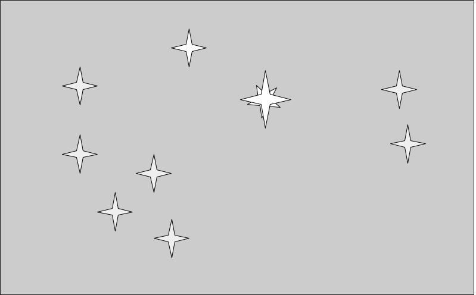
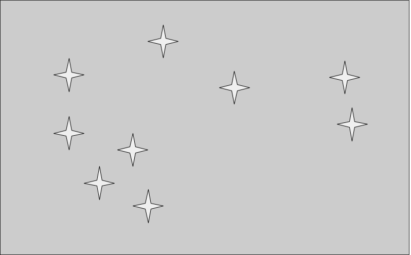
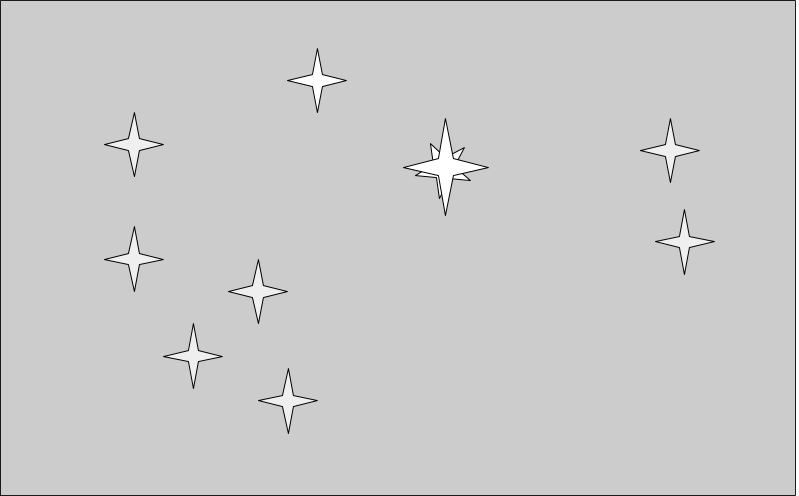
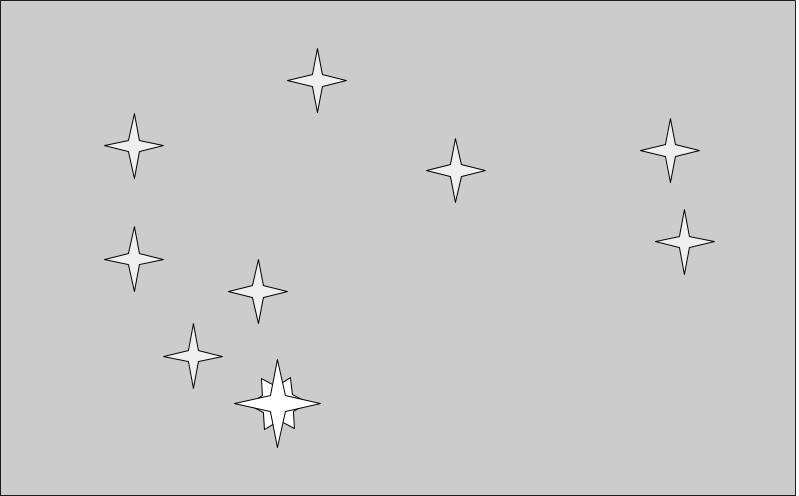
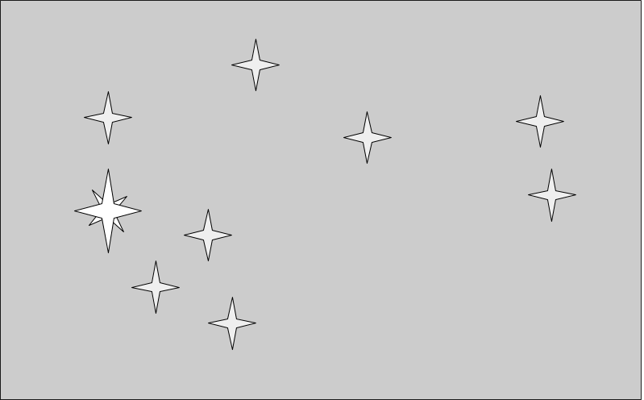

Matariki
Matariki

Matariki symbolises health and wellbeing. If someone is ill as Matariki rises and it shines bright in the sky, this is a sign that person will recover.

This game will help you learn the stars of Matariki, and their symbolism.
In the picture of the Matariki star cluster, one star will be bigger and brighter. Click on the name of that star, or the picture representing its meaning.
The meanings will be described below.
If you are right, you'll receive a point. The aim is to get to 20 marks with the highest possible percent correct.
The information in this game comes from Rangi Matamua's book: "Matariki: the star of the year". Interpreting the texts of his ancestors, he describes 9 stars in the Matariki cluster.
If the Matariki stars are bright in the sky when they rise in the new year, this is a sign of a bountiful harvest for the coming year. Each star also has its own special significance, as described below.
Matariki

Matariki symbolises health and wellbeing. If someone is ill as Matariki rises and it shines bright in the sky, this is a sign that person will recover.
 Tupuānuku
Tupuānuku
 Tupuānuku relates to food provided by the earth. If it shines brightly, the garden crops will do well that year.
Tupuānuku relates to food provided by the earth. If it shines brightly, the garden crops will do well that year.
 Tupuārangi
Tupuārangi
 Tupuārangi relates to food provided by the sky. If it is bright, there will be many birds available to hunters, and fruit on the high trees.
Tupuārangi relates to food provided by the sky. If it is bright, there will be many birds available to hunters, and fruit on the high trees.
Waitī symbolises the fresh water in rivers and lakes. When it is bright, there will be many fish in the rivers and lakes.
 When Waitā shines brightly, it is a sign of many fish in the ocean.
When Waitā shines brightly, it is a sign of many fish in the ocean.
 Waipunarangi relates to the rain. When it can be clearly seen, it is a sign there will not be heavy rainfall in that year.
Waipunarangi relates to the rain. When it can be clearly seen, it is a sign there will not be heavy rainfall in that year.

Pōhutukawa is a star that relates to death. It is a good sign when Pōhutukawa is bright in the sky, indicating that there will not be much death in the iwi in the coming year.

Hiwa-i-te-rangi is the star representing the hopes and dreams of the people and the iwi. If it shines brightly, it is a sign the dreams will come true.
 Ururangi relates to the wind. If it shines brightly, there will not be too much wind in the coming year.
Ururangi relates to the wind. If it shines brightly, there will not be too much wind in the coming year.